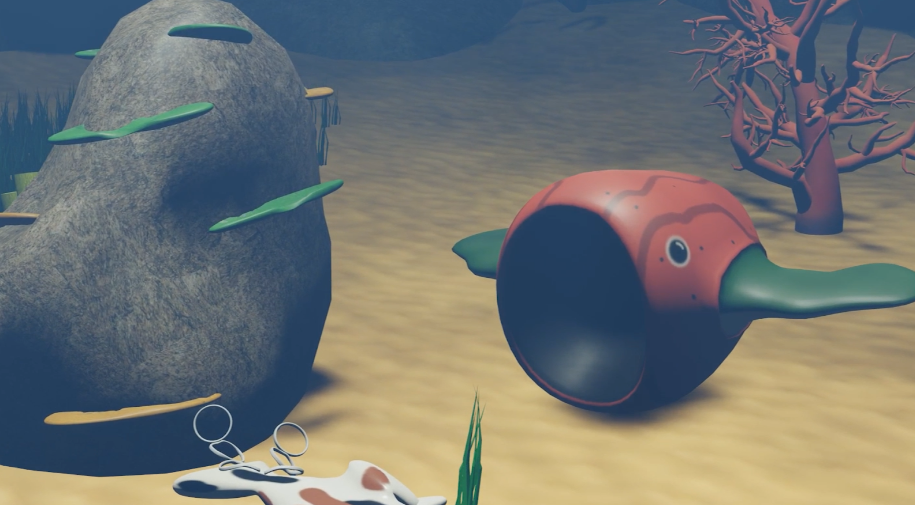
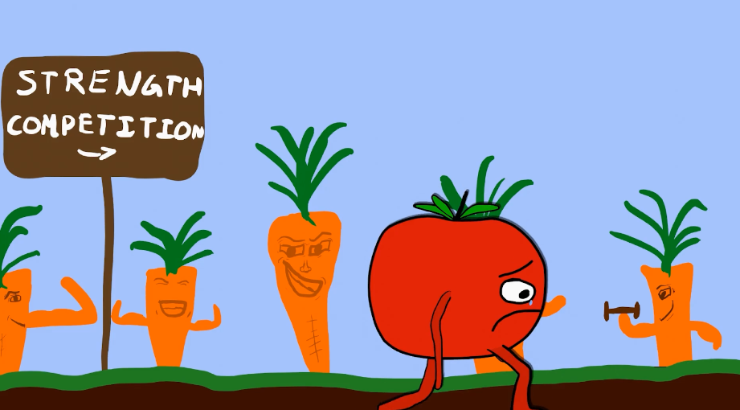
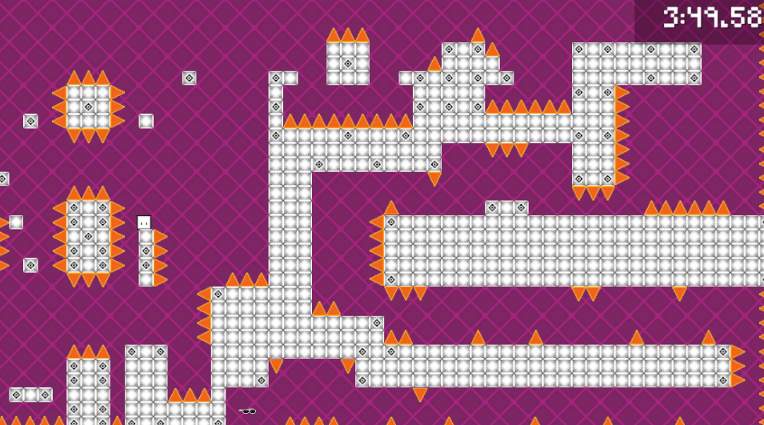

Best Works
Animating a Coral Reef Story

This project was the final project in our animation unit in CAWD 1. I’m proud of my ideas and story, and I really like how some of the animations turned out. It took me around 3 weeks to finish this project.
First, I modeled some coral, greenery, and a fish to use in my project. I procrastinated this, so the fish was not a keeper. I then set up the scene for my animation, using Blender’s rock generator for the exterior area of the reef and a sandy plane on the bottom, which I gave some bumps to vary it. It was around this time when I made my storyboard on paper, drafting out 8-ish scenes in total. I wouldn’t fully stick to this, but it was great to have something to reference if I needed help on where to go from where.
I then placed plenty of my greenery around to create some patches of it, and grabbed some coral from the community folder. One of them was very heavy in tris, so I decimated it and fixed the texture afterwards. I attempted to animate my sea grass to sway back and forth, but I ended up scrapping that idea as it would be too much to render in a reasonable time. I set up a lighting system to project sun rays into the water, with the help of a classmate.
I then took some fish from the public and rigged armatures for them so I could animate their limbs separately from their general movement, which I used an empty circle for instead (by parenting the fish to the empty, I could animate the empty to the position and the fish to the fish.) After this, I made my way scene through scene animating and rendering my project. I never saved copies of the scenes when I was done, instead overwriting them. This was due to me doing it all in quite the hurry due to few absences and it already being late, but it led to me being unable to revise it later without redoing it all. I finished the project like this, then added some sounds and music and tweaked colors a bit in Adobe Premiere Pro.
If I were to tackle this project again, I would probably spend more time polishing the project. I would also try to save each scene separately, so I could go back in and make adjustments without re-making the entire thing. This would help some continuity errors present in the final version.
Overall, I enjoyed coming up with a unique story and spending a lot of time on the smaller details on this project, and I think it turned out well.
Animating a Sad Tomato

This project was a 2D animation project for CAWD 2 where I made a character, animated a walk-cycle, and drew a background for it. I am proud of the story of it all, because at any glance you can tell what is going on. It took me a week and a half to animate.
I started by drawing a basic tomato shape in Blender’s 2D interface using my Wacom tablet, although I wasn’t really sure yet whether I wanted it to be a tomato or an apple. I then drew the first frame’s walking position, lining it up with a guide for drawing 2D walking cycles. I then decided to give it hyperrealistic legs and arms with grotesque thumbnails on each limb, but I realized it would be too time-consuming to re-draw in a different position each frame, as I learned I couldn’t just modify the shape.
I then took away its limbs and went back to just the face, and I decided to draw the background instead. To keep the buff limbs idea, I made the background a field of strangely strong carrots, setting the scene as a competition of strength. I would then give the now-official tomato quite weak limbs, and as it walked through the scene it would be crying as it just couldn’t compete with the carrots.
I try to go for humor whenever I do a project like this, so when I came up with the idea I knew I had to try it out. After drawing on the weak limbs, I animated the rest of the walk cycle every 3 frames for a total of 24 frames, which I could then loop by copy + pasting. As one final addition, I made the tomato cry as he walked, and the water seeped up into the ground.
If I were to do this project again, I’d fix a few inconsistencies and be a little more ambitious. The tomato’s legs fluctuate in size in my final version, so I’d like to fix that and make it consistent. I would also make the background scroll in parallax, because it is stagnant in the current version.
Overall, I enjoyed making this because I find humor in stupid ideas like this, and I like to try new things.
Creating Bawxome: SkillsUSA Game Design

This project was to design a game over a few months for the SkillsUSA competition. I worked with one of my classmates, because it was a 2 person assignment. We created a short 2D platforming game called “Bawxome”. I really enjoyed all aspects of this project, and I’m especially proud of my custom soundtrack.
As my partner began programming, I made some temporary assets in Aseprite for them to lay things out with. These were just outlines in black at the exact size as I would make the real assets later on. I then made the real assets for the character and the levels, also in Aseprite. I had some extra time at this point, so I decided to create a few simple animations for the character, such as a death animation and a jump animation.
While my partner was finishing the programming and bugfixing, I spent my time making music for the levels, and then the title screen and end screen because I had extra time. I then used Unity to design the levels’ layouts to my liking. I gave the levels a very extreme difficulty curve, because my main philosophy behind the game was being a very fast-paced and difficult game.
In the final week, my partner and I created a Google slideshow to present our work, process, and ideas. I created a trailer for the game in Adobe Premiere Pro, and my goal for this trailer was to be memorable and fast, so I synced it to a shortened version of the main theme. We also included some custom-made gifs that were created within Adobe Premiere Pro as well. We then presented this and the game itself to a judge, and ended up winning 3rd place in the state.
If I were to do this project again, I would just try to get more of it done. I would definitely make some higher-quality assets/animations in Aseprite, and I’d use my spare time at other points to work on the music instead. I would also take more time to make sure the levels are balanced, as I wasn’t able to spend as much time on them as I would’ve liked. The animations (except for the death animation) could also be a lot more prevalent.
Overall, I seriously enjoyed my time on this project, and ended up making a functional and fairly addicting game, which I’m pretty proud of.